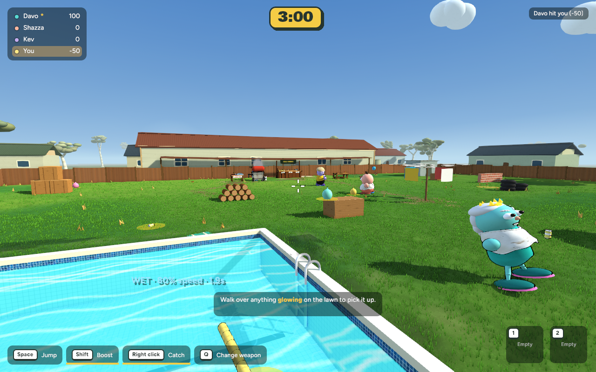
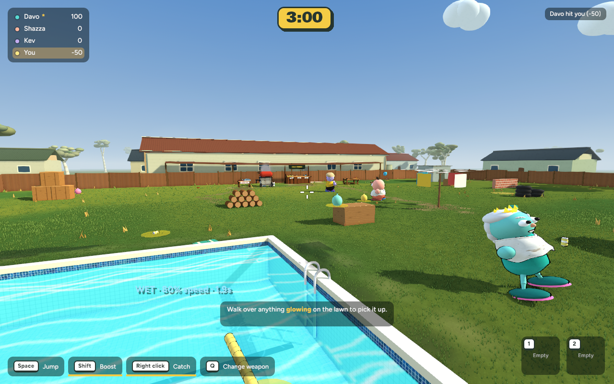
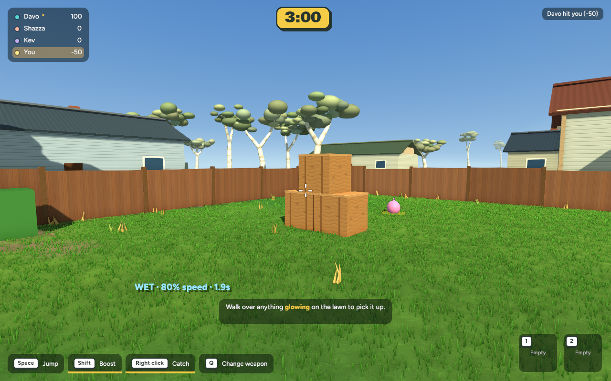
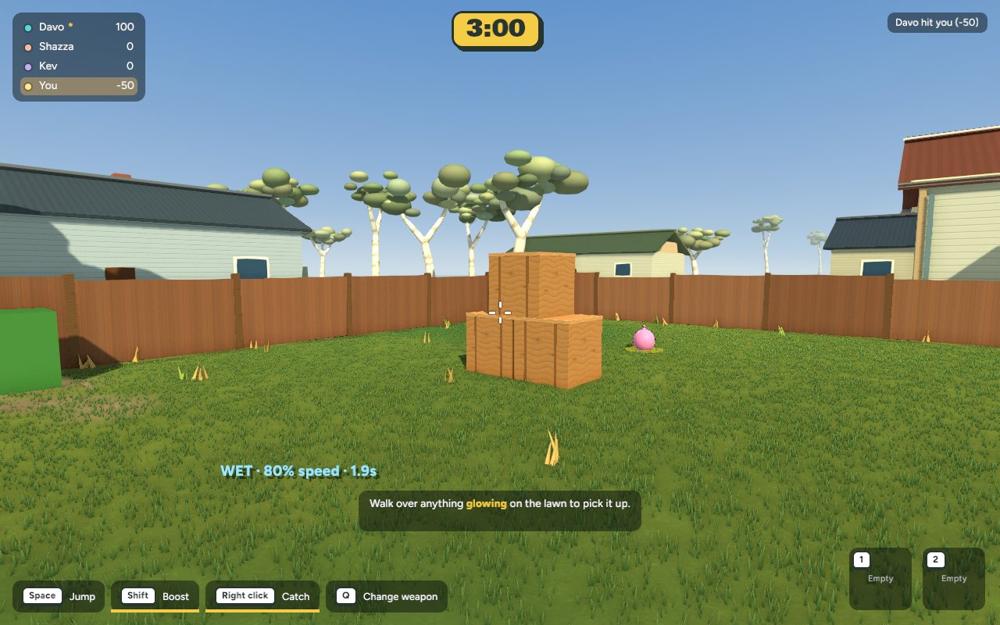
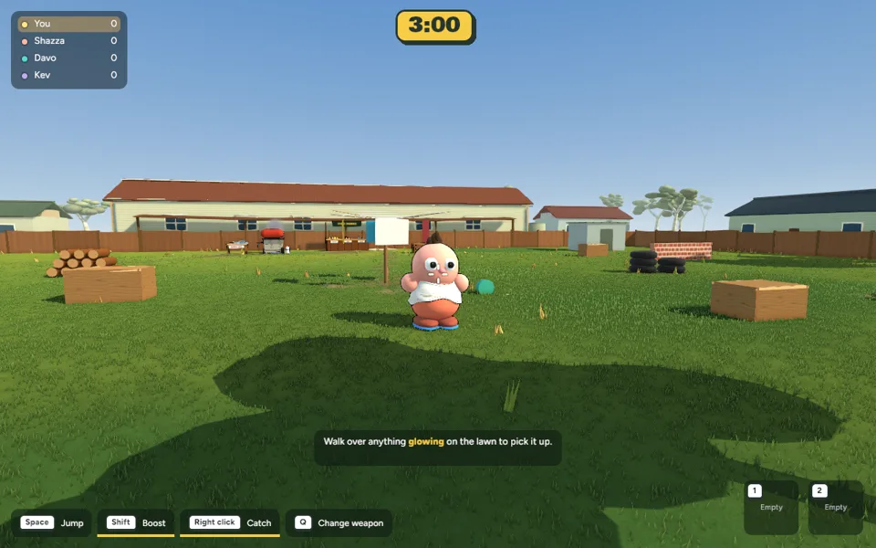

First implemented graphics preview · 25 October 2026 · Actual game captures
Warmer light, gentler shaded areas, calmer lawn variation and restrained house detail. The familiar characters and playful backyard remain. This preview is switchable; the default look and other maps have not been rolled over to it.





Controlled camera drift through a scripted throw scene. Use this to judge moving grass detail, shadows and character readability. No concept images or generated assets.
669 tests pass; native and browser builds pass. Matched mean frame time: gameplay 8.861 → 8.896 ms; close view 8.121 → 8.347 ms. Existing throw source hashes match the prior checkpoint. Full backup verified.
cd /Users/marcus/Claude/australian-bbq/rust ~/.cargo/bin/cargo run -p bbq_app --release -- --menu --backyard-finish
Choose Backyard. Remove --backyard-finish and restart for the current look.
Browser: Open local preview (requires the local server). Remove the query and reload to restore the current look. The preview is session-wide; other map combinations are outside this review.
Verification, performance, exact scope and backup. Pending throw elevation and smooth recovery are preserved. No commit, push or publication.